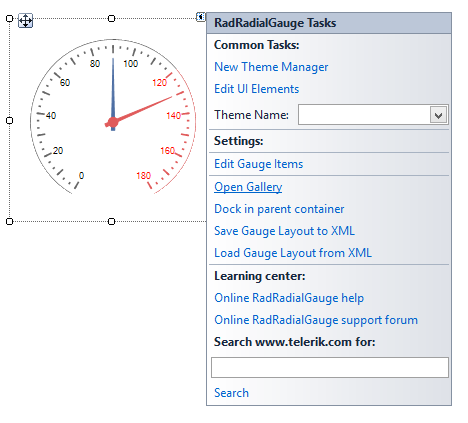

Getting started
Loading predefined gauges
When you drag a RadRadialGauge from the Toolbox and drop it onto the form, the gauge gallery will offer you to pick up the desired type:
You can change the gauge's style via the Smart tag's option * Open Gallery* as well.
Adding items programmatically
You can create your own gauge's style programmatically from the scratch by adding the desired labels, ticks, needles, arcs to the
RadRadialGauge.Items collection. Here is a sample code snippet:

[C#]
RadialGaugeLabels labels = new RadialGaugeLabels();
RadialGaugeTicks smallTicks = new RadialGaugeTicks();
RadialGaugeTicks bigTicks = new RadialGaugeTicks();
RadialGaugeNeedle needle = new RadialGaugeNeedle();
RadialGaugeArc arc = new RadialGaugeArc();
labels.LabelFontSize = 4;
smallTicks.TickColor = Color.Red;
smallTicks.TickThickness = 0.5f;
smallTicks.TicksCount = 30;
smallTicks.TickStartIndexVisibleRange = 15;
bigTicks.TickColor = Color.DimGray;
bigTicks.TickThickness = 1f;
bigTicks.TicksCount = 10;
bigTicks.TicksLenghtPercentage = 20;
bigTicks.TicksRadiusPercentage = 80;
needle.LenghtPercentage = 60;
arc.Width = 0.5f;
arc.BackColor = Color.Gray;
radRadialGauge1.Items.Add(labels);
radRadialGauge1.Items.Add(smallTicks);
radRadialGauge1.Items.Add(bigTicks);
radRadialGauge1.Items.Add(needle);
radRadialGauge1.Items.Add(arc);
[VB.NET]
Dim labels As New RadialGaugeLabels()
Dim smallTicks As New RadialGaugeTicks()
Dim bigTicks As New RadialGaugeTicks()
Dim needle As New RadialGaugeNeedle()
Dim arc As New RadialGaugeArc()
labels.LabelFontSize = 4
smallTicks.TickColor = Color.Red
smallTicks.TickThickness = 0.5F
smallTicks.TicksCount = 30
smallTicks.TickStartIndexVisibleRange = 15
bigTicks.TickColor = Color.DimGray
bigTicks.TickThickness = 1.0F
bigTicks.TicksCount = 10
bigTicks.TicksLenghtPercentage = 20
bigTicks.TicksRadiusPercentage = 80
needle.LenghtPercentage = 60
arc.Width = 0.5F
arc.BackColor = Color.Gray
radRadialGauge1.Items.Add(labels)
radRadialGauge1.Items.Add(smallTicks)
radRadialGauge1.Items.Add(bigTicks)
radRadialGauge1.Items.Add(needle)
radRadialGauge1.Items.Add(arc)
'#End Region
Me.Controls.Add(radRadialGauge1)
radRadialGauge1.Items.Clear()
AdvancedExample()
End Sub
'#Region "AdvancedExample"
Private timer As New Timer()
Private [step] As Single = 0.0F
Private Sub AdvancedExample()
Me.AVGRadialGauge1.RangeStart = 0
Me.AVGRadialGauge1.RangeEnd = 9
AddHandler Me.AVGRadialGauge1.ValueChanged, AddressOf AVGRadialGauge1_ValueChanged
[step] = -CSng(AVGRadialGauge1.RangeEnd - AVGRadialGauge1.RangeStart) / 10.0F
Me.RadialGaugeLabels1.LabelFormat = "#,##0.00#"
Me.RadialGaugeLabels1.LabelRadiusPercentage = 70
Me.RadialGaugeLabels1.LabelEndVisibleRange = 5
Me.RadialGaugeLabels2.LabelRadiusPercentage = 70
Me.RadialGaugeLabels2.LabelFormat = "#,##0.00#"
Me.RadialGaugeLabels2.LabelStartVisibleRange = 6
Me.RadialGaugeNeedle1.Visibility = ElementVisibility.Collapsed
Me.RadialGaugeNeedle2.Value = 4.25F
Me.RadialGaugeNeedle2.BackColor = Color.Black
Me.RadialGaugeNeedle2.BackColor2 = Color.Black
Me.RadialGaugeNeedle2.BackLenghtPercentage = 0
Me.RadialGaugeNeedle2.Thickness = 0.2F
Me.RadialGaugeNeedle2.BindValue = True
Dim firstCircleTick As New RadialGaugeTicks()
Me.AVGRadialGauge1.Items.Add(firstCircleTick)
firstCircleTick.TicksCount = 18
firstCircleTick.TickStartIndexVisibleRange = 5
firstCircleTick.TickEndIndexVisibleRange = 5
firstCircleTick.TicksLenghtPercentage = 3
firstCircleTick.TicksRadiusPercentage = 115
firstCircleTick.CircleTicks = True
firstCircleTick.TickThickness = 1
firstCircleTick.TickColor = Color.DimGray
Dim firstTick As New RadialGaugeTicks()
Me.AVGRadialGauge1.Items.Add(firstTick)
firstTick.TicksCount = 18
firstTick.TickStartIndexVisibleRange = 5
firstTick.TickEndIndexVisibleRange = 5
firstTick.TicksRadiusPercentage = 103
firstTick.CircleTicks = False
firstTick.TickThickness = 1
firstTick.TickColor = Color.DimGray
Dim secondCircleTick As New RadialGaugeTicks()
Me.AVGRadialGauge1.Items.Add(secondCircleTick)
secondCircleTick.TicksCount = 18
secondCircleTick.TickStartIndexVisibleRange = 9
secondCircleTick.TickEndIndexVisibleRange = 9
secondCircleTick.TicksLenghtPercentage = 3
secondCircleTick.TicksRadiusPercentage = 115
secondCircleTick.CircleTicks = True
secondCircleTick.TickThickness = 1
secondCircleTick.TickColor = Color.DimGray
Dim secondTick As New RadialGaugeTicks()
Me.AVGRadialGauge1.Items.Add(secondTick)
secondTick.TicksCount = 18
secondTick.TickStartIndexVisibleRange = 9
secondTick.TickEndIndexVisibleRange = 9
secondTick.TicksRadiusPercentage = 103
secondTick.CircleTicks = False
secondTick.TickThickness = 1
secondTick.TickColor = Color.DimGray
timer.Interval = 1000
AddHandler timer.Tick, AddressOf timer_Tick
timer.Start()
End Sub
Private Sub AVGRadialGauge1_ValueChanged(sender As Object, e As EventArgs)
If Me.AVGRadialGauge1.Value >= 6.0F Then
Me.RadialGaugeNeedle2.BackColor = Color.FromArgb(224, 90, 90)
Me.RadialGaugeNeedle2.BackColor2 = Color.FromArgb(224, 90, 90)
Else
Me.RadialGaugeNeedle2.BackColor = Color.Black
Me.RadialGaugeNeedle2.BackColor2 = Color.Black
End If
End Sub
Private Sub timer_Tick(sender As Object, e As EventArgs)
If AVGRadialGauge1.Value + [step] > AVGRadialGauge1.RangeEnd OrElse AVGRadialGauge1.Value + [step] < AVGRadialGauge1.RangeStart Then
[step] = -[step]
End If
Dim setting As New AnimatedPropertySetting(RadRadialGaugeElement.ValueProperty, AVGRadialGauge1.Value, AVGRadialGauge1.Value + [step], 12, 40)
setting.ApplyEasingType = RadEasingType.OutBounce
setting.ApplyValue(AVGRadialGauge1.GaugeElement)
End Sub
'#End Region
'#Region "Clock"
Private hoursNeedle As RadialGaugeNeedle
Private minutesNeedle As RadialGaugeNeedle
Private secondsNeedle As RadialGaugeNeedle
Private Sub RadialGaugeGettingStarted_Load(sender As Object, e As EventArgs) Handles MyBase.Load
Dim hoursLabels As New RadialGaugeLabels()
Dim minutesTicks As New RadialGaugeTicks()
Dim bigTicks As New RadialGaugeTicks()
hoursNeedle = New RadialGaugeNeedle()
minutesNeedle = New RadialGaugeNeedle()
secondsNeedle = New RadialGaugeNeedle()
Dim arc As New RadialGaugeArc()
hoursLabels.LabelFontSize = 4
bigTicks.TickColor = Color.DimGray
bigTicks.TickThickness = 1.0F
bigTicks.TicksCount = 12
bigTicks.TicksLenghtPercentage = 20
bigTicks.TicksRadiusPercentage = 80
minutesTicks.TicksCount = 60
minutesTicks.TickColor = Color.Black
minutesTicks.TickThickness = 0.5F
hoursNeedle.LenghtPercentage = 40
hoursNeedle.BackColor = Color.Gray
hoursNeedle.BackColor2 = Color.Gray
minutesNeedle.LenghtPercentage = 60
minutesNeedle.BackColor = Color.Gray
minutesNeedle.BackColor2 = Color.Gray
secondsNeedle.LenghtPercentage = 80
secondsNeedle.BackColor = Color.CadetBlue
secondsNeedle.BackColor2 = Color.CadetBlue
arc.Width = 0.5F
arc.BackColor = Color.Gray
radRadialGauge1.StartAngle = 270
radRadialGauge1.SweepAngle = 360
radRadialGauge1.RangeStart = 0
radRadialGauge1.RangeEnd = 12
hoursLabels.LabelStartVisibleRange = 1
hoursLabels.LabelFormat = "N0"
hoursLabels.LabelsCount = 12
radRadialGauge1.Items.Add(hoursLabels)
radRadialGauge1.Items.Add(minutesTicks)
radRadialGauge1.Items.Add(bigTicks)
radRadialGauge1.Items.Add(hoursNeedle)
radRadialGauge1.Items.Add(minutesNeedle)
radRadialGauge1.Items.Add(secondsNeedle)
radRadialGauge1.Items.Add(arc)
Me.Timer1.Start()
End Sub
Private Sub Timer1_Tick(sender As Object, e As EventArgs) Handles Timer1.Tick
Dim angleHour As Single = CSng(DateTime.Now.Hour * 30 + DateTime.Now.Minute * 0.5)
hoursNeedle.Value = (angleHour Mod 360) / 360 * 12
minutesNeedle.Value = 12 * (CSng(DateTime.Now.Minute) / 60)
secondsNeedle.Value = 12 * (CSng(DateTime.Now.Second) / 60)
End Sub
'#End Region
End Class
Adding additional elements
Drag a RadRadialGauge from the Toolbox and drop it onto the form. The gauge gallery will offer you to pick up the desired type. Select the first gauge type.
Now, we will customize the gauge in order to obtain the result illustrated on the screen-shot below:

[C#]
Timer timer = new Timer();
float step = 0f;
private void AdvancedExample()
{
this.AVGRadialGauge1.RangeStart = 0;
this.AVGRadialGauge1.RangeEnd = 9;
this.AVGRadialGauge1.ValueChanged += AVGRadialGauge1_ValueChanged;
step = -(float)(AVGRadialGauge1.RangeEnd - AVGRadialGauge1.RangeStart) / 10f;
this.radialGaugeLabels1.LabelFormat = "#,##0.00#";
this.radialGaugeLabels1.LabelRadiusPercentage = 70;
this.radialGaugeLabels1.LabelEndVisibleRange = 5;
this.radialGaugeLabels2.LabelRadiusPercentage = 70;
this.radialGaugeLabels2.LabelFormat = "#,##0.00#";
this.radialGaugeLabels2.LabelStartVisibleRange=6;
this.radialGaugeNeedle1.Visibility = ElementVisibility.Collapsed;
this.radialGaugeNeedle2.Value = 4.25f;
this.radialGaugeNeedle2.BackColor = Color.Black;
this.radialGaugeNeedle2.BackColor2 = Color.Black;
this.radialGaugeNeedle2.BackLenghtPercentage = 0;
this.radialGaugeNeedle2.Thickness = 0.2f;
this.radialGaugeNeedle2.BindValue = true;
RadialGaugeTicks firstCircleTick = new RadialGaugeTicks();
this.AVGRadialGauge1.Items.Add(firstCircleTick);
firstCircleTick.TicksCount = 18;
firstCircleTick.TickStartIndexVisibleRange = 5;
firstCircleTick.TickEndIndexVisibleRange = 5;
firstCircleTick.TicksLenghtPercentage = 3;
firstCircleTick.TicksRadiusPercentage = 115;
firstCircleTick.CircleTicks = true;
firstCircleTick.TickThickness = 1;
firstCircleTick.TickColor = Color.DimGray;
RadialGaugeTicks firstTick = new RadialGaugeTicks();
this.AVGRadialGauge1.Items.Add(firstTick);
firstTick.TicksCount = 18;
firstTick.TickStartIndexVisibleRange = 5;
firstTick.TickEndIndexVisibleRange = 5;
firstTick.TicksRadiusPercentage = 103;
firstTick.CircleTicks = false;
firstTick.TickThickness = 1;
firstTick.TickColor = Color.DimGray;
RadialGaugeTicks secondCircleTick = new RadialGaugeTicks();
this.AVGRadialGauge1.Items.Add(secondCircleTick);
secondCircleTick.TicksCount = 18;
secondCircleTick.TickStartIndexVisibleRange = 9;
secondCircleTick.TickEndIndexVisibleRange = 9;
secondCircleTick.TicksLenghtPercentage = 3;
secondCircleTick.TicksRadiusPercentage = 115;
secondCircleTick.CircleTicks = true;
secondCircleTick.TickThickness = 1;
secondCircleTick.TickColor = Color.DimGray;
RadialGaugeTicks secondTick = new RadialGaugeTicks();
this.AVGRadialGauge1.Items.Add(secondTick);
secondTick.TicksCount = 18;
secondTick.TickStartIndexVisibleRange = 9;
secondTick.TickEndIndexVisibleRange = 9;
secondTick.TicksRadiusPercentage = 103;
secondTick.CircleTicks = false;
secondTick.TickThickness = 1;
secondTick.TickColor = Color.DimGray;
timer.Interval = 1000;
timer.Tick += timer_Tick;
timer.Start();
}
private void AVGRadialGauge1_ValueChanged(object sender, EventArgs e)
{
if (this.AVGRadialGauge1.Value >= 6f)
{
this.radialGaugeNeedle2.BackColor = Color.FromArgb(224, 90, 90);
this.radialGaugeNeedle2.BackColor2 = Color.FromArgb(224, 90, 90);
}
else
{
this.radialGaugeNeedle2.BackColor = Color.Black;
this.radialGaugeNeedle2.BackColor2 = Color.Black;
}
}
private void timer_Tick(object sender, EventArgs e)
{
if (AVGRadialGauge1.Value + step > AVGRadialGauge1.RangeEnd || AVGRadialGauge1.Value + step < AVGRadialGauge1.RangeStart)
{
step = -step;
}
AnimatedPropertySetting setting = new AnimatedPropertySetting(RadRadialGaugeElement.ValueProperty,
AVGRadialGauge1.Value, AVGRadialGauge1.Value + step, 12, 40);
setting.ApplyEasingType = RadEasingType.OutBounce;
setting.ApplyValue(AVGRadialGauge1.GaugeElement);
}
[VB.NET]
Private timer As New Timer()
Private [step] As Single = 0.0F
Private Sub AdvancedExample()
Me.AVGRadialGauge1.RangeStart = 0
Me.AVGRadialGauge1.RangeEnd = 9
AddHandler Me.AVGRadialGauge1.ValueChanged, AddressOf AVGRadialGauge1_ValueChanged
[step] = -CSng(AVGRadialGauge1.RangeEnd - AVGRadialGauge1.RangeStart) / 10.0F
Me.RadialGaugeLabels1.LabelFormat = "#,##0.00#"
Me.RadialGaugeLabels1.LabelRadiusPercentage = 70
Me.RadialGaugeLabels1.LabelEndVisibleRange = 5
Me.RadialGaugeLabels2.LabelRadiusPercentage = 70
Me.RadialGaugeLabels2.LabelFormat = "#,##0.00#"
Me.RadialGaugeLabels2.LabelStartVisibleRange = 6
Me.RadialGaugeNeedle1.Visibility = ElementVisibility.Collapsed
Me.RadialGaugeNeedle2.Value = 4.25F
Me.RadialGaugeNeedle2.BackColor = Color.Black
Me.RadialGaugeNeedle2.BackColor2 = Color.Black
Me.RadialGaugeNeedle2.BackLenghtPercentage = 0
Me.RadialGaugeNeedle2.Thickness = 0.2F
Me.RadialGaugeNeedle2.BindValue = True
Dim firstCircleTick As New RadialGaugeTicks()
Me.AVGRadialGauge1.Items.Add(firstCircleTick)
firstCircleTick.TicksCount = 18
firstCircleTick.TickStartIndexVisibleRange = 5
firstCircleTick.TickEndIndexVisibleRange = 5
firstCircleTick.TicksLenghtPercentage = 3
firstCircleTick.TicksRadiusPercentage = 115
firstCircleTick.CircleTicks = True
firstCircleTick.TickThickness = 1
firstCircleTick.TickColor = Color.DimGray
Dim firstTick As New RadialGaugeTicks()
Me.AVGRadialGauge1.Items.Add(firstTick)
firstTick.TicksCount = 18
firstTick.TickStartIndexVisibleRange = 5
firstTick.TickEndIndexVisibleRange = 5
firstTick.TicksRadiusPercentage = 103
firstTick.CircleTicks = False
firstTick.TickThickness = 1
firstTick.TickColor = Color.DimGray
Dim secondCircleTick As New RadialGaugeTicks()
Me.AVGRadialGauge1.Items.Add(secondCircleTick)
secondCircleTick.TicksCount = 18
secondCircleTick.TickStartIndexVisibleRange = 9
secondCircleTick.TickEndIndexVisibleRange = 9
secondCircleTick.TicksLenghtPercentage = 3
secondCircleTick.TicksRadiusPercentage = 115
secondCircleTick.CircleTicks = True
secondCircleTick.TickThickness = 1
secondCircleTick.TickColor = Color.DimGray
Dim secondTick As New RadialGaugeTicks()
Me.AVGRadialGauge1.Items.Add(secondTick)
secondTick.TicksCount = 18
secondTick.TickStartIndexVisibleRange = 9
secondTick.TickEndIndexVisibleRange = 9
secondTick.TicksRadiusPercentage = 103
secondTick.CircleTicks = False
secondTick.TickThickness = 1
secondTick.TickColor = Color.DimGray
timer.Interval = 1000
AddHandler timer.Tick, AddressOf timer_Tick
timer.Start()
End Sub
Private Sub AVGRadialGauge1_ValueChanged(sender As Object, e As EventArgs)
If Me.AVGRadialGauge1.Value >= 6.0F Then
Me.RadialGaugeNeedle2.BackColor = Color.FromArgb(224, 90, 90)
Me.RadialGaugeNeedle2.BackColor2 = Color.FromArgb(224, 90, 90)
Else
Me.RadialGaugeNeedle2.BackColor = Color.Black
Me.RadialGaugeNeedle2.BackColor2 = Color.Black
End If
End Sub
Private Sub timer_Tick(sender As Object, e As EventArgs)
If AVGRadialGauge1.Value + [step] > AVGRadialGauge1.RangeEnd OrElse AVGRadialGauge1.Value + [step] < AVGRadialGauge1.RangeStart Then
[step] = -[step]
End If
Dim setting As New AnimatedPropertySetting(RadRadialGaugeElement.ValueProperty, AVGRadialGauge1.Value, AVGRadialGauge1.Value + [step], 12, 40)
setting.ApplyEasingType = RadEasingType.OutBounce
setting.ApplyValue(AVGRadialGauge1.GaugeElement)
End Sub
'#End Region
'#Region "Clock"
Private hoursNeedle As RadialGaugeNeedle
Private minutesNeedle As RadialGaugeNeedle
Private secondsNeedle As RadialGaugeNeedle
Private Sub RadialGaugeGettingStarted_Load(sender As Object, e As EventArgs) Handles MyBase.Load
Dim hoursLabels As New RadialGaugeLabels()
Dim minutesTicks As New RadialGaugeTicks()
Dim bigTicks As New RadialGaugeTicks()
hoursNeedle = New RadialGaugeNeedle()
minutesNeedle = New RadialGaugeNeedle()
secondsNeedle = New RadialGaugeNeedle()
Dim arc As New RadialGaugeArc()
hoursLabels.LabelFontSize = 4
bigTicks.TickColor = Color.DimGray
bigTicks.TickThickness = 1.0F
bigTicks.TicksCount = 12
bigTicks.TicksLenghtPercentage = 20
bigTicks.TicksRadiusPercentage = 80
minutesTicks.TicksCount = 60
minutesTicks.TickColor = Color.Black
minutesTicks.TickThickness = 0.5F
hoursNeedle.LenghtPercentage = 40
hoursNeedle.BackColor = Color.Gray
hoursNeedle.BackColor2 = Color.Gray
minutesNeedle.LenghtPercentage = 60
minutesNeedle.BackColor = Color.Gray
minutesNeedle.BackColor2 = Color.Gray
secondsNeedle.LenghtPercentage = 80
secondsNeedle.BackColor = Color.CadetBlue
secondsNeedle.BackColor2 = Color.CadetBlue
arc.Width = 0.5F
arc.BackColor = Color.Gray
radRadialGauge1.StartAngle = 270
radRadialGauge1.SweepAngle = 360
radRadialGauge1.RangeStart = 0
radRadialGauge1.RangeEnd = 12
hoursLabels.LabelStartVisibleRange = 1
hoursLabels.LabelFormat = "N0"
hoursLabels.LabelsCount = 12
radRadialGauge1.Items.Add(hoursLabels)
radRadialGauge1.Items.Add(minutesTicks)
radRadialGauge1.Items.Add(bigTicks)
radRadialGauge1.Items.Add(hoursNeedle)
radRadialGauge1.Items.Add(minutesNeedle)
radRadialGauge1.Items.Add(secondsNeedle)
radRadialGauge1.Items.Add(arc)
Me.Timer1.Start()
End Sub
Private Sub Timer1_Tick(sender As Object, e As EventArgs) Handles Timer1.Tick
Dim angleHour As Single = CSng(DateTime.Now.Hour * 30 + DateTime.Now.Minute * 0.5)
hoursNeedle.Value = (angleHour Mod 360) / 360 * 12
minutesNeedle.Value = 12 * (CSng(DateTime.Now.Minute) / 60)
secondsNeedle.Value = 12 * (CSng(DateTime.Now.Second) / 60)
End Sub
'#End Region
End Class
Clock example
The following code snippet is purposed to demonstrate how to create a simple clock. For this purpose we will add the necessary clock's elements to the
RadRadialGauge.Items collection. Afterwards, we need to drag a timer from the Toolbox and drop it onto the form.
Set the timer's Interval property to 1000. Subscribe to its Tick
event where we should update the time.

[C#]
RadialGaugeNeedle hoursNeedle ;
RadialGaugeNeedle minutesNeedle;
RadialGaugeNeedle secondsNeedle;
private void RadialGaugeGettingStarted_Load(object sender, EventArgs e)
{
RadialGaugeLabels hoursLabels = new RadialGaugeLabels();
RadialGaugeTicks minutesTicks = new RadialGaugeTicks();
RadialGaugeTicks bigTicks = new RadialGaugeTicks();
hoursNeedle = new RadialGaugeNeedle();
minutesNeedle = new RadialGaugeNeedle();
secondsNeedle = new RadialGaugeNeedle();
RadialGaugeArc arc = new RadialGaugeArc();
hoursLabels.LabelFontSize = 4;
bigTicks.TickColor = Color.DimGray;
bigTicks.TickThickness = 1f;
bigTicks.TicksCount = 12;
bigTicks.TicksLenghtPercentage = 20;
bigTicks.TicksRadiusPercentage = 80;
minutesTicks.TicksCount = 60;
minutesTicks.TickColor = Color.Black;
minutesTicks.TickThickness = 0.5f;
hoursNeedle.LenghtPercentage = 40;
hoursNeedle.BackColor = Color.Gray;
hoursNeedle.BackColor2 = Color.Gray;
minutesNeedle.LenghtPercentage = 60;
minutesNeedle.BackColor = Color.Gray;
minutesNeedle.BackColor2 = Color.Gray;
secondsNeedle.LenghtPercentage = 80;
secondsNeedle.BackColor = Color.CadetBlue;
secondsNeedle.BackColor2 = Color.CadetBlue;
arc.Width = 0.5f;
arc.BackColor = Color.Gray;
radRadialGauge1.StartAngle = 270;
radRadialGauge1.SweepAngle = 360;
radRadialGauge1.RangeStart = 0;
radRadialGauge1.RangeEnd = 12;
hoursLabels.LabelStartVisibleRange = 1;
hoursLabels.LabelFormat = "N0";
hoursLabels.LabelsCount = 12;
radRadialGauge1.Items.Add(hoursLabels);
radRadialGauge1.Items.Add(minutesTicks);
radRadialGauge1.Items.Add(bigTicks);
radRadialGauge1.Items.Add(hoursNeedle);
radRadialGauge1.Items.Add(minutesNeedle);
radRadialGauge1.Items.Add(secondsNeedle);
radRadialGauge1.Items.Add(arc);
this.timer1.Start();
}
private void timer1_Tick(object sender, EventArgs e)
{
float angleHour = (float)(DateTime.Now.Hour * 30 + DateTime.Now.Minute * 0.5);
hoursNeedle.Value = angleHour % 360 / 360 * 12 ;
minutesNeedle.Value = 12 * ((float)DateTime.Now.Minute / 60);
secondsNeedle.Value = 12 * ((float)DateTime.Now.Second / 60);
}
[VB.NET]
Private hoursNeedle As RadialGaugeNeedle
Private minutesNeedle As RadialGaugeNeedle
Private secondsNeedle As RadialGaugeNeedle
Private Sub RadialGaugeGettingStarted_Load(sender As Object, e As EventArgs) Handles MyBase.Load
Dim hoursLabels As New RadialGaugeLabels()
Dim minutesTicks As New RadialGaugeTicks()
Dim bigTicks As New RadialGaugeTicks()
hoursNeedle = New RadialGaugeNeedle()
minutesNeedle = New RadialGaugeNeedle()
secondsNeedle = New RadialGaugeNeedle()
Dim arc As New RadialGaugeArc()
hoursLabels.LabelFontSize = 4
bigTicks.TickColor = Color.DimGray
bigTicks.TickThickness = 1.0F
bigTicks.TicksCount = 12
bigTicks.TicksLenghtPercentage = 20
bigTicks.TicksRadiusPercentage = 80
minutesTicks.TicksCount = 60
minutesTicks.TickColor = Color.Black
minutesTicks.TickThickness = 0.5F
hoursNeedle.LenghtPercentage = 40
hoursNeedle.BackColor = Color.Gray
hoursNeedle.BackColor2 = Color.Gray
minutesNeedle.LenghtPercentage = 60
minutesNeedle.BackColor = Color.Gray
minutesNeedle.BackColor2 = Color.Gray
secondsNeedle.LenghtPercentage = 80
secondsNeedle.BackColor = Color.CadetBlue
secondsNeedle.BackColor2 = Color.CadetBlue
arc.Width = 0.5F
arc.BackColor = Color.Gray
radRadialGauge1.StartAngle = 270
radRadialGauge1.SweepAngle = 360
radRadialGauge1.RangeStart = 0
radRadialGauge1.RangeEnd = 12
hoursLabels.LabelStartVisibleRange = 1
hoursLabels.LabelFormat = "N0"
hoursLabels.LabelsCount = 12
radRadialGauge1.Items.Add(hoursLabels)
radRadialGauge1.Items.Add(minutesTicks)
radRadialGauge1.Items.Add(bigTicks)
radRadialGauge1.Items.Add(hoursNeedle)
radRadialGauge1.Items.Add(minutesNeedle)
radRadialGauge1.Items.Add(secondsNeedle)
radRadialGauge1.Items.Add(arc)
Me.Timer1.Start()
End Sub
Private Sub Timer1_Tick(sender As Object, e As EventArgs) Handles Timer1.Tick
Dim angleHour As Single = CSng(DateTime.Now.Hour * 30 + DateTime.Now.Minute * 0.5)
hoursNeedle.Value = (angleHour Mod 360) / 360 * 12
minutesNeedle.Value = 12 * (CSng(DateTime.Now.Minute) / 60)
secondsNeedle.Value = 12 * (CSng(DateTime.Now.Second) / 60)
End Sub
'#End Region
End Class